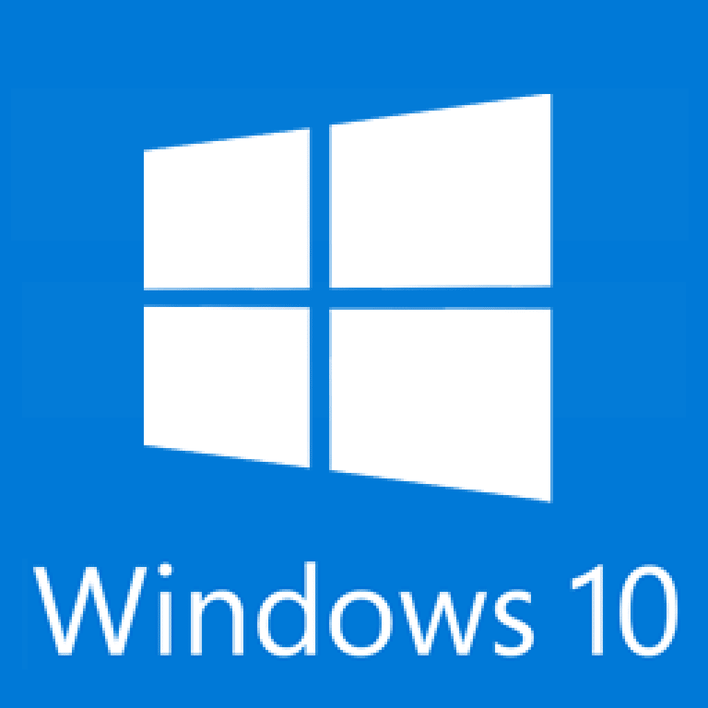
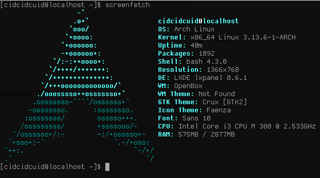
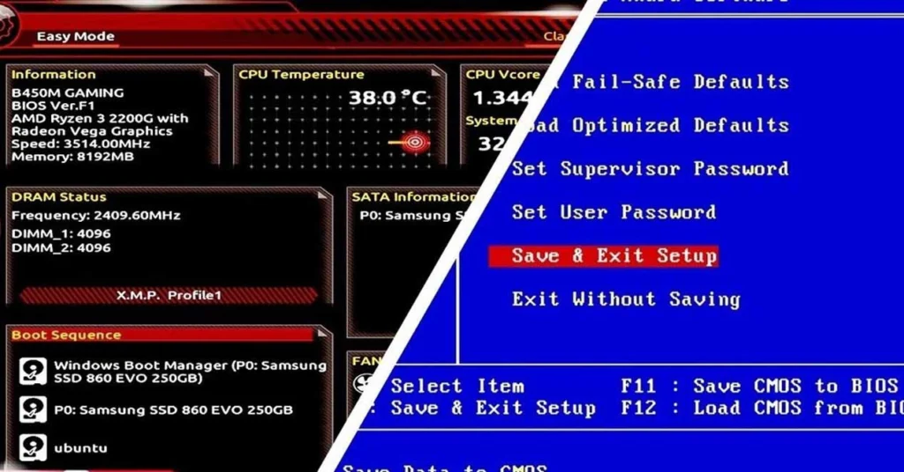
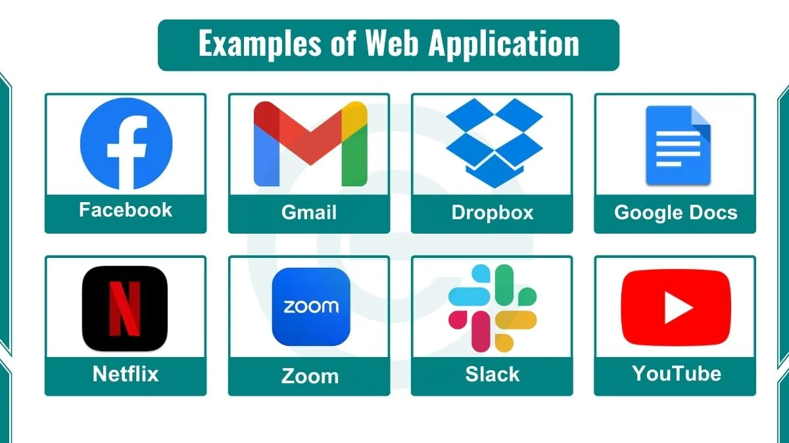
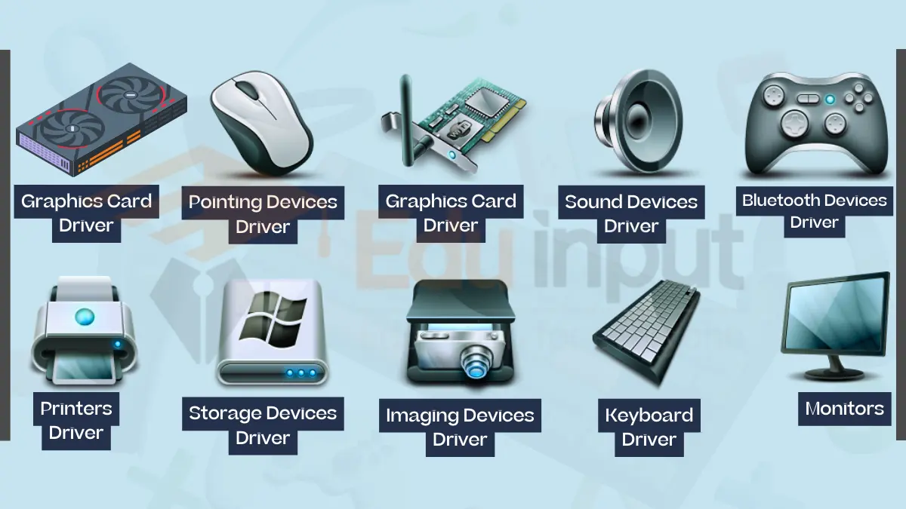

ระบบปฏิบัติการ (Operating System) คืออะไร
ซอฟต์แวร์ที่จัดการและควบคุมโปรแกรมประยุกต์และติดต่อ ประสานงานกับอุปกรณ์ ทําให้คอมพิวเตอร์สามารถปฏิบัติงานตามที่ผู้ใช้ต้องการ ช่วยให้ผู้ใช้เป็นอิสระจากรายละเอียดของฮาร์ดแวร์ คําว่า Platform ใช้อ้างอิงถึงฮาร์ดแวร์ + OS + สภาพแวดล้อม
ตัวอย่างรูปภาพระบบปฏิบัติการ (OS/Operating System)

Windows 10
macOS
โครงสร้างระบบปฏิบัติการ
- โปรแกรมควบคุมอุปกรณ์: BIOS / Firmware / Device Driver / HAL (Hardware Abstraction Layer)
- ตัวแกนของระบบปฏิบัติqการ (OS Kernel): จัดการหน่วยความจำ หน่วยประมวลผล
- ระบบไฟล์และความปลอดภัย
- User Interface หรือ Shell: Command Line หรือ Graphic User Interface (GUI)
ตัวอย่างรูปภาพระบบปฏิบัติการ Arch Linux และ BIOS

Arch Linux

BIOS
โปรแกรมประยุกต์กับการข้ามแพลตฟอร์ม (Cross-Platform)
| รูปแบบ | ลักษณะ | หมายเหตุ |
|---|---|---|
| แยกพัฒนาหลายชุด | พัฒนาแยกสำหรับแต่ละระบบปฏิบัติการ | เช่น Windows, Mac OS, Android, iOS |
| Cross-platform application | ชุดเดียวรันได้หลายแพลตฟอร์ม | ต้องมี runtime environment ร่วม |
| Web-based application | รันในเว็บบราวเซอร์มาตรฐาน | ช้าและกินทรัพยากรมากที่สุด |
ตัวอย่าง Web Application ที่สามารถใช้งานข้ามแพลตฟอร์ม

โปรแกรมควบคุมฮาร์ดแวร์ระดับล่าง
BIOS (Basic Input Output System): บรรจุใน ROM ควบคุมอุปกรณ์มาตรฐาน (CPU, RAM, เมนบอร์ด, ฮาร์ดดิสก์) → ทำให้ OS และโปรแกรมอิสระจากรายละเอียดอุปกรณ์ Device Driver: ติดตั้งเพิ่มเติมสำหรับอุปกรณ์ที่ไม่รู้จัก (เครื่องพิมพ์, สแกนเนอร์) Android HAL: ระดับควบคุมฮาร์ดแวร์สำหรับระบบ Android
ตัวอย่างรูปภาพโปรแกรมควบคุมฮาร์ดแวร์ระดับล่าง
